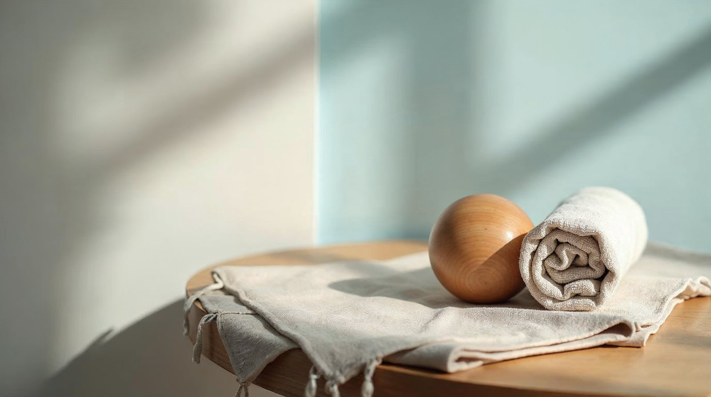
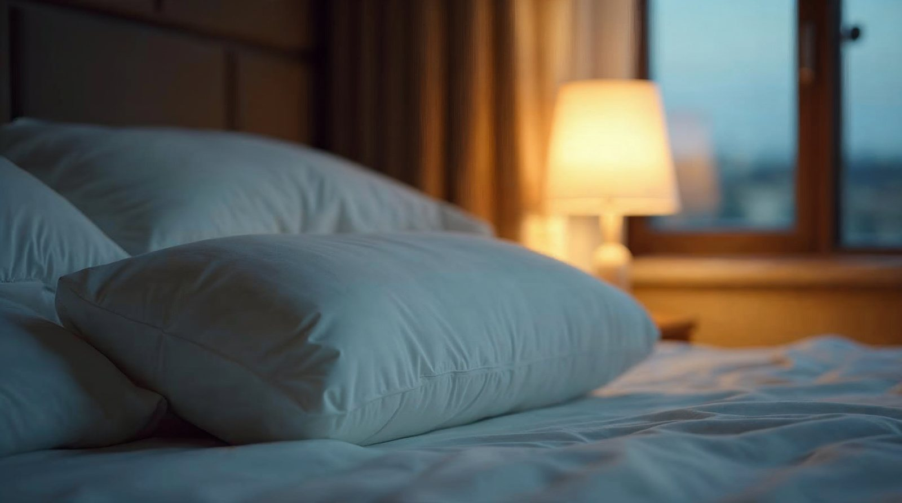
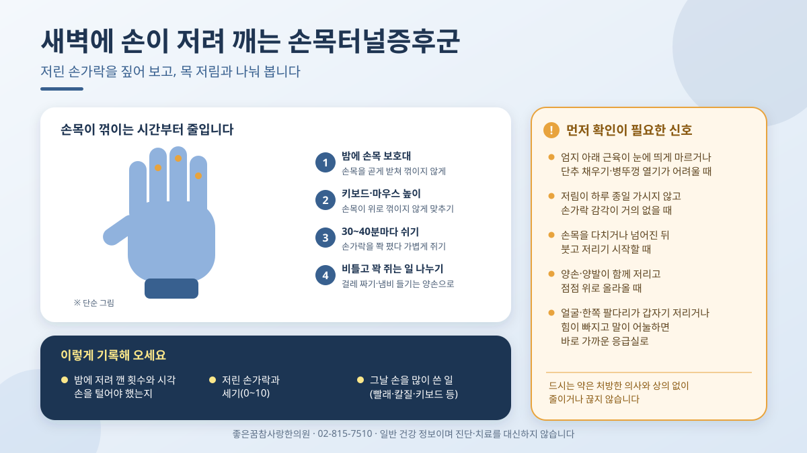

이종호 한의사 감수좋은꿈참사랑한의원 대표원장 (한의사 면허번호 19769)발행 2026-11-26 · 수정 2026-11-26
이 글의 차례
새벽 네 시, 손이 저려서 잠이 깹니다. 손가락이 퉁퉁 부은 것 같고 남의 손처럼 감각이 멍합니다. 침대 밖으로 손을 내밀어 탈탈 털고, 주먹을 몇 번 쥐었다 펴야 겨우 다시 눕습니다. 아침이 되면 언제 그랬냐는 듯 괜찮다가, 다음 날 새벽에 또 깹니다.
이렇게 밤이나 새벽에 엄지, 검지, 중지, 그리고 넷째 손가락의 엄지 쪽 절반이 저리고, 손을 털면 조금 나아진다면 손목터널증후군에 가까운 경우가 많습니다. 저는 이런 분이 오시면 어느 손가락이 저린지 손가락으로 짚어 보시게 하고, 목에서 내려오는 저림은 아닌지부터 나누어 봅니다.
다만 엄지 아래 도톰한 살이 눈에 띄게 마르거나, 단추를 채우거나 병뚜껑을 열 힘이 빠졌다면, 손 감각이 거의 없어졌다면 기다리지 말고 먼저 확인을 받으셔야 합니다. 얼굴이나 한쪽 팔다리가 함께 갑자기 저리거나 말이 어눌해졌다면 가까운 응급실로 가셔야 합니다.
진료실에서 이런 말씀을 자주 듣습니다. 낮에는 멀쩡하니 병원에 가기도 애매하고, 밤마다 깨니 잠은 모자라고, 그렇다고 손을 안 쓸 수도 없다고요. 손으로 일하는 분일수록 그 답답함이 큽니다.
밥을 짓고, 아이를 안고, 키보드를 두드리고, 가위를 쥐는 손입니다. 하루 종일 그 손으로 버텨 놓고 밤에는 그 손 때문에 잠을 못 이루니, 얼마나 고단하셨을까 싶습니다.
왜 하필 새벽에 손이 저릴까요
손목 안쪽에는 뼈와 두꺼운 인대가 만든 좁은 터널이 있습니다. 이 터널로 손가락을 굽히는 힘줄 아홉 개와 정중신경이 함께 지나갑니다. 공간이 넉넉하지 않은 곳에 여러 가지가 빽빽하게 지나가는 셈이지요.
힘줄을 감싼 막이 붓거나 두꺼워지면, 터널 안 압력이 올라가고 그 안을 지나는 신경이 눌립니다. 정중신경은 엄지, 검지, 중지, 넷째 손가락의 엄지 쪽 절반 감각을 맡고 있습니다. 그래서 저림도 그 손가락들에 나타납니다.
자는 동안 우리는 자기도 모르게 손목을 안으로 꺾고 잡니다. 손목이 꺾이면 터널 안 압력이 더 올라갑니다. 또 누워 있는 동안 손으로 가는 혈액과 체액이 몰려 붓기 쉽습니다. 그래서 낮보다 밤, 특히 새벽에 저려서 깨는 일이 많습니다.
손을 탈탈 털면 조금 나아지는 것도 그래서입니다. 손목을 펴고 손을 움직이면 눌렸던 신경 주변에 다시 피가 돌기 시작합니다. 이 '털면 풀린다'는 이야기를 들으면 저는 손목터널 쪽에 무게를 둡니다.
손목을 많이 쓰는 일, 손목을 꺾은 채 오래 일하는 자세, 진동 공구가 이 터널을 지치게 합니다. 임신 중이나 출산 뒤처럼 몸이 잘 붓는 시기, 당뇨나 갑상선 기능 저하, 류마티스 관절염이 있을 때도 생기기 쉬운 것으로 알려져 있습니다.
한의학에서는 손의 저림을 기혈이 손끝까지 잘 닿지 못하는 모습으로 보고, 몸이 잘 붓는지, 손발이 찬지, 잠과 소화는 어떤지를 함께 봅니다. 같은 손목이라도 몸 전체가 지쳐 있으면 회복할 여유가 줄어든다고 보기 때문입니다.
손목에서 오는 저림, 목에서 오는 저림
손이 저리다고 다 손목 때문은 아닙니다. 진료실에서 제가 가장 먼저 나누는 것이 손목에서 오는 저림인지, 목에서 내려오는 저림인지입니다. 둘이 함께 있는 분도 생각보다 많습니다.
손목터널증후군은 대개 손바닥과 손가락에만 저림이 있고, 새끼손가락은 저리지 않는 편입니다. 밤에 심하고, 손을 털면 나아지고, 손목을 오래 꺾고 있으면 심해집니다. 목을 돌리거나 젖혀도 손 저림은 크게 달라지지 않습니다.
목에서 신경이 눌려 내려오는 저림은 목과 어깨, 날개뼈 안쪽이 함께 아프고, 팔을 따라 줄을 긋듯 내려오는 경우가 많습니다. 고개를 뒤로 젖히거나 아픈 쪽으로 기울이면 팔 저림이 심해지기도 하지요.
이 이야기는 목에서 팔로 저림이 내려올 때(목디스크 의심)는 어떤 점을 먼저 확인하나요?에 자세히 적었습니다.
새끼손가락과 넷째 손가락 새끼 쪽이 저리다면 손목이 아니라 팔꿈치 안쪽을 지나는 척골신경 쪽을 의심합니다. 팔꿈치를 오래 굽히고 휴대폰을 보거나, 팔꿈치를 책상에 대고 오래 기대는 습관이 있는 분께 흔합니다.
양손과 양발이 함께 저리고 시리다면 손목 하나의 문제보다 혈당이나 비타민, 갑상선, 혈액순환처럼 몸 전체의 상태를 먼저 살펴야 할 수 있습니다. 이런 경우는 손발이 저리고 차가울 때는 어떤 점을 먼저 확인하나요?를 함께 보셔도 좋습니다.

스스로 점검해 보세요
- 엄지, 검지, 중지가 주로 저리고 새끼손가락은 괜찮다
- 밤이나 새벽에 저려서 깬 적이 있다
- 손을 털거나 주먹을 쥐었다 펴면 조금 나아진다
- 운전대나 휴대폰, 머리 말리는 드라이어를 오래 쥐면 저려 온다
- 아침에 손가락이 붓고 뻣뻣한 느낌이 든다
- 목을 돌리거나 젖혀도 손 저림은 별로 달라지지 않는다
해당하는 줄이 많을수록 손목 쪽 이야기를 먼저 나눕니다. 반대로 목과 날개뼈 통증이 함께 있다면 목 쪽부터 짚어 보겠습니다.
손목에만 머물지 않고 함께 보는 곳
손목터널증후군이라고 해서 손목만 보지는 않습니다. 어깨가 앞으로 말리고 고개가 앞으로 나온 자세로 오래 일하면, 팔로 내려가는 신경과 혈관이 지나는 길 전체가 빠듯해집니다. 손목에 조금만 부담이 더해져도 저림이 쉽게 올라오는 셈입니다.
그래서 저는 손 저림으로 오신 분의 어깨 앞쪽과 쇄골 주변, 팔꿈치 안쪽까지 손으로 짚어 봅니다. 어느 한 곳만 풀어서는 금세 다시 저려 오는 분이 있어, 길 전체를 같이 살피는 편이 낫다고 보기 때문입니다.
잠도 빼놓지 않습니다. 저림 때문에 깨고, 깬 뒤 다시 잠들지 못하면 다음 날 손은 더 무겁게 느껴집니다. 몇 시에 깨서 얼마 만에 다시 잠드는지를 함께 여쭙는 것도 그래서입니다.
먼저 이렇게 여쭙니다
저림을 말로 설명하기는 어렵습니다. 아래 질문을 떠올려 보시고, 진료실에서는 손가락으로 짚어 보여 주시면 됩니다.
- 어느 손가락이 저린가요? 새끼손가락도 저린가요?
- 밤이나 새벽에 저려서 깨나요? 손을 털면 나아지나요?
- 목이나 어깨, 날개뼈 쪽도 함께 아픈가요? 고개를 젖히면 손이 더 저린가요?
- 물건을 자주 떨어뜨리거나 단추 채우기가 어려워졌나요?
- 요즘 손을 많이 쓰는 일, 임신이나 출산, 당뇨나 갑상선 질환, 드시는 약이 있나요?
잠은 몇 번 깨시는지, 손이 붓는 느낌이 아침에 심한지, 소화와 대변은 어떤지도 함께 여쭙니다. 손 이야기를 하러 오셨는데 왜 잠과 소화를 묻나 싶으실 수 있지만, 몸이 버티는 힘을 함께 보려는 것입니다.
일상에서 먼저 해 볼 수 있는 것
손을 아예 쓰지 않을 수는 없습니다. 그래서 저는 손목이 꺾여 있는 시간을 줄이는 데서 시작하시라고 말씀드립니다. 특히 밤사이 꺾이는 손목을 지키는 것이 첫걸음입니다.
- 잘 때 손목이 꺾이지 않도록 손목을 곧게 받쳐 주는 보호대를 써 보기
- 키보드와 마우스를 쓸 때 손목이 위로 꺾이지 않게 높이를 맞추고, 손목 받침에 체중을 싣지 않기
- 30~40분마다 손을 내려놓고 손가락을 쫙 폈다 가볍게 쥐기를 몇 번 되풀이하기
- 걸레 짜기, 무거운 냄비 들기처럼 손목을 비틀고 꽉 쥐는 일은 나누어 하거나 양손으로 하기
- 휴대폰은 한 손으로 오래 쥐지 말고, 받침대에 세우거나 양손으로 들기
- 저녁에 손이 붓는 느낌이 들면 짜게 먹은 날은 아닌지 살피고, 손을 심장보다 조금 높게 두고 쉬기
손목을 세게 꺾어 늘이는 스트레칭은 오히려 저림을 부를 수 있습니다. 시원한 정도에서 멈추고, 하고 나서 더 저리면 그 동작은 쉬시면 됩니다. 손을 털어야 할 만큼 저린 날은 손에게도 쉬는 날을 주세요.
보호대는 처음 몇 주는 밤에만 차 보시고, 낮에는 손을 너무 묶어 두지 않는 편이 좋습니다. 손가락은 계속 움직여야 붓기가 덜 고입니다. 보호대를 차고 잔 날 깬 횟수를 적어 두시면 다음 진료 때 함께 비교해 볼 수 있습니다.
예를 들면 이런 경우입니다
실제 어느 분의 사연이 아니라, 진료실에서 자주 보는 모습을 바탕으로 그려 본 장면입니다.
예를 들어 출산 뒤 아기를 안고 젖병을 쥐느라 손목을 많이 쓰는 시기에 새벽마다 손이 저린 경우가 있습니다. 몸이 붓기 쉬운 때라 손목 보호대와 안는 자세부터 함께 살피고, 수유 중이라면 그에 맞춰 방법을 고릅니다.
예를 들어 하루 종일 계산대나 사무실에서 손을 쓰는 분이 오후에는 괜찮다가 밤에만 저리는 경우도 있습니다. 이때는 일하는 높이와 손목 각도, 쉬는 간격을 먼저 적어 보시라고 말씀드립니다.
예를 들어 손 저림에 목과 날개뼈 통증이 함께 있고, 고개를 젖히면 팔까지 저린 경우도 있습니다. 이런 분은 손목과 목을 둘 다 살피고, 필요하면 신경 검사가 가능한 병원을 먼저 안내합니다.
예를 들어 배달이나 출퇴근으로 오토바이, 자전거 핸들을 오래 쥐는 분이 손바닥이 저리고 손목이 시큰한 경우도 있습니다. 진동과 꽉 쥐는 힘, 손목이 꺾인 각도가 겹치는 자리라 장갑과 핸들 잡는 법부터 함께 봅니다.
이 이야기는 배달 일로 오토바이나 자전거를 타면 손목과 어깨가 저린 것은 어떻게 살피나요?에도 적어 두었습니다.
예를 들어 겨울만 되면 손이 차고 저림이 심해진다는 분도 계십니다. 찬물로 설거지하거나 찬 바람에 손을 내놓고 다니면 손끝까지 피가 덜 돌아 저림을 더 크게 느끼기 쉽습니다. 장갑을 끼고, 설거지는 미지근한 물로 하시라고 말씀드립니다.
다만 당뇨가 있거나 손끝 감각이 둔해진 분은 저린 손으로는 물 온도를 잘 가늠하지 못합니다. 손을 넣기 전에 팔뚝 안쪽으로 먼저 온도를 대 보시고, 손난로나 뜨거운 찜질은 짧게만 쓰세요.

한의원에서 함께 살필 수 있는 경우
- 밤에 손이 저려 깨지만 엄지 쪽 근육 마름이나 뚜렷한 힘 빠짐은 없는 경우
- 손목과 함께 목, 어깨, 팔꿈치가 늘 굳어 있고 손 저림이 섞여 오는 경우
- 손을 많이 쓰는 일을 계속해야 해서 생활 속 자세와 쉬는 법을 함께 정하고 싶은 경우
- 몸이 잘 붓고 손발이 차며, 잠과 소화가 함께 흔들리는 경우
좋은꿈참사랑한의원에 처음 오시면 언제부터, 어느 손가락이, 하루 중 언제 저린지부터 듣고, 위에 적은 먼저 확인이 필요한 신호가 없는지 확인합니다. 받으신 검사 결과와 드시는 약이 있다면 가져와 주세요.
그다음 양손을 올려 달라고 말씀드립니다. 저는 처음 오신 분이든 다시 오신 분이든 모든 분께 맥을 짚습니다. 저린 손이라도 맥은 양쪽 손목에서 다 봅니다. 맥을 짚는 동안 잠과 소화, 대변과 소변, 붓기와 체온을 여쭙습니다.
이어서 양손 엄지 아래 근육을 나란히 놓고 비교해 보고, 손가락 감각과 엄지 힘을 확인합니다. 손목을 굽혀 잠시 두거나 손목 안쪽을 가볍게 두드려 저림이 나오는지 보고, 고개를 돌리고 젖히는 움직임과 팔꿈치 안쪽도 차례로 봅니다.
필요하다고 판단되면 초음파로 손목 안쪽 신경과 힘줄 주변을 함께 살펴볼 수 있습니다.
초음파로 무엇을 보는지는 밤에 손이 저려 깰 때 손목 초음파로 무엇을 확인하나요?에 정리해 두었습니다. 신경 전도 검사가 필요하다고 보이면 검사가 가능한 병원을 안내합니다.
이렇게 살핀 내용을 바탕으로 침, 약침, 추나, 한약 상담 가운데 지금 상태에 맞는 방법을 함께 정합니다. 다시 오시면 지난번 이후 밤에 손이 저려 깬 횟수부터 이어서 여쭙습니다.
이렇게 기록해 오시면 상담이 쉬워집니다
손 저림은 진료실에 오는 낮에는 잠잠한 경우가 많습니다. 그래서 밤사이 일을 적어 오시면 큰 도움이 됩니다. 2주만 한 줄씩 적어 보세요.
- 밤에 저려서 깬 횟수와 시각, 손을 털어야 했는지
- 저린 손가락(엄지, 검지, 중지, 넷째, 새끼)과 세기(0~10)
- 그날 손을 많이 쓴 일(빨래, 칼질, 키보드, 공구 등)과 시간
- 목과 어깨 통증이 함께 있었는지
- 손목 보호대를 차고 잔 날과 안 찬 날의 차이
저린 손가락은 손 그림을 하나 그려 색칠해 오셔도 좋습니다. 빠진 날이 있어도 괜찮습니다. 기억나는 만큼만 적어 오시면 나머지는 제가 여쭙겠습니다.
이런 증상은 먼저 확인이 필요합니다
- 엄지 아래 도톰한 근육이 반대쪽보다 눈에 띄게 마른 경우
- 물건을 자주 떨어뜨리고, 단추 채우기나 병뚜껑 열기처럼 엄지 힘이 필요한 일이 어려워진 경우
이런 신호가 있으면 한의원보다 가까운 병원이나 응급실을 먼저 찾으세요.
밤마다 깨어 손을 털던 시간, 그 손으로 또 하루를 시작하셨을 겁니다. 그 손이 조금 덜 고단하도록 낮의 자세와 밤의 손목부터 함께 살펴보겠습니다. 다음에 오시면 지난번 이후 새벽에 손이 저려 깬 날이 며칠이었는지부터 여쭙겠습니다.

여쭙는 것
- 어느 손가락이 저린가요? 새끼손가락도 저린가요?
- 밤이나 새벽에 저려서 깨나요? 손을 털면 나아지나요?
- 목이나 어깨, 날개뼈 쪽도 함께 아픈가요? 고개를 젖히면 손이 더 저린가요?
생활에서 해 볼 것
- 잘 때 손목이 꺾이지 않도록 손목을 곧게 받쳐 주는 보호대를 써 보기
- 키보드와 마우스를 쓸 때 손목이 위로 꺾이지 않게 높이를 맞추고, 손목 받침에 체중…
- 30~40분마다 손을 내려놓고 손가락을 쫙 폈다 가볍게 쥐기를 몇 번 되풀이하기
한의원에서 함께 살필 것
- 밤에 손이 저려 깨지만 엄지 쪽 근육 마름이나 뚜렷한 힘 빠짐은 없는 경우
- 손목과 함께 목, 어깨, 팔꿈치가 늘 굳어 있고 손 저림이 섞여 오는 경우
- 손을 많이 쓰는 일을 계속해야 해서 생활 속 자세와 쉬는 법을 함께 정하고 싶은 경우
먼저 확인이 필요한 신호
- 엄지 아래 도톰한 근육이 반대쪽보다 눈에 띄게 마른 경우
- 물건을 자주 떨어뜨리고, 단추 채우기나 병뚜껑 열기처럼 엄지 힘이 필요한 일이 어려…
한눈에 보는 표
| 구분 | 핵심 |
|---|---|
| 여쭙는 것 | 어느 손가락이 저린가요? 새끼손가락도 저린가요? 밤이나 새벽에 저려서 깨나요? 손을 털면 나아지나요? |
| 생활에서 해 볼 것 | 잘 때 손목이 꺾이지 않도록 손목을 곧게 받쳐 주는 보호대를 써 보기 키보드와 마우스를 쓸 때 손목이 위로 꺾이지 않게 높이를 맞추고, 손목 받침에 체중을 싣지 않기 |
| 한의원에서 함께 살필 것 | 밤에 손이 저려 깨지만 엄지 쪽 근육 마름이나 뚜렷한 힘 빠짐은 없는 경우 손목과 함께 목, 어깨, 팔꿈치가 늘 굳어 있고 손 저림이 섞여 오는 경우 |
| 먼저 확인이 필요한 신호 | 엄지 아래 도톰한 근육이 반대쪽보다 눈에 띄게 마른 경우 물건을 자주 떨어뜨리고, 단추 채우기나 병뚜껑 열기처럼 엄지 힘이 필요한 일이 어려워진 경우 |
자주 묻는 질문
손목터널증후군과 목디스크 저림은 어떻게 구분하나요?
손목터널증후군은 엄지에서 넷째 손가락까지 저리고 밤에 심하며 손을 털면 나아지는 경우가 많습니다. 목에서 오는 저림은 목과 어깨, 날개뼈 통증이 함께 있고 팔을 따라 내려오며 고개를 젖히면 심해지기도 합니다. 둘이 함께 있을 수도 있어 진찰로 나누어 봅니다.
새끼손가락이 저린 것도 손목터널증후군인가요?
새끼손가락과 넷째 손가락 새끼 쪽이 저리면 팔꿈치 안쪽을 지나는 척골신경 쪽을 먼저 의심합니다. 팔꿈치를 오래 굽히는 습관이 있는지 함께 살핍니다.
손목 보호대는 언제 차면 좋나요?
밤에 저려서 깨는 분이라면 잘 때 손목이 꺾이지 않도록 곧게 받쳐 주는 보호대를 먼저 써 보시길 권합니다. 너무 꽉 조여 손이 붓거나 더 저리면 느슨하게 조절하세요.
엄지 쪽 근육이 말라 보이면 어떻게 해야 하나요?
신경이 오래 눌렸다는 신호일 수 있어 기다리지 말고 정형외과나 신경과에서 신경 검사를 먼저 받아 보시길 권합니다.
좋은꿈참사랑한의원은 재진 때 지난번 이야기부터 이어서 여쭙니다. 진료시간과 예약은 오시는 길에서 확인하세요.
어디서 상담받을 수 있나요?
좋은꿈참사랑한의원은 서울 동작구 만양로2길 2 신성빌딩 3층·5층(서울 동작구 상도동, 7호선 상도역 3번 출구 근처)에 있습니다. 한의사 3명(이종호 대표원장, 조영기 수석진료원장, 정원영 진료원장)이 진료합니다. 진료시간은 평일 09:30~20:00(점심 13:00~14:00), 토·일·공휴일 09:30~15:00이며, 방문 전 전화로 확인을 권합니다. 예약은 네이버 예약, 카카오톡 상담, 전화 02-815-7510로 받습니다.
이 글은 일반적인 건강 정보이며 개인의 진단이나 치료를 대신하지 않습니다. 증상이 있거나 복용 중인 약이 있다면 진료를 통해 확인하세요. 치료 효과는 개인마다 다를 수 있습니다.
작성 기준: 일반적으로 알려져 있는 건강 정보를 참고해 정리했습니다(대표원장 감수). 증상 기록은 1~2주 동안 하루 1회, 비슷한 시간에 적어 오시면 지난 상태와 비교하기 쉽습니다.